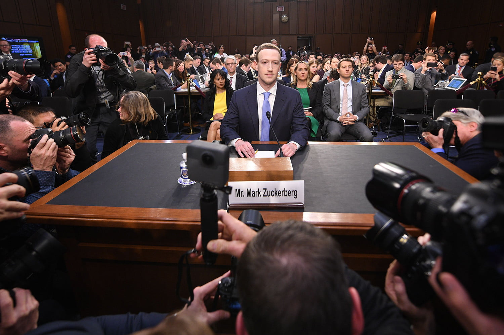

Industry Opinions on Internet Regulation
Mark Zuckerberg wrote an op-ed for the Washington Post (link) in March 2019. In his opinion, Zuckerberg advocates for new regulation in four areas: harmful content, election integrity, privacy, and data portability.
First, he calls for regulations that set global baselines for prohibited content - citing terrorist propaganda, hate speech, and more as examples of content Facebook currently filters by its own understanding. He suggests third parties set baselines for harmful content and that companies be required to build systems to prohibit harmful content. The regulation Zuckerberg proposes would notably potentially be against the United States’ Communications Decency Act Section 230, which prohibits platforms being held accountable for user content.
Second, he calls for legislation to protect election content - following scandal in recent elections, it would benefit Facebook to have clear rules to follow. He points out that the laws in place focus on candidates and elections, rather than divisive political issues, where Facebook has seen the most election-related misuse.
Third, Zuckerberg advocates for privacy legislation global adaptation of GDPR or another framework to keep the internet from becoming fragmented and inconsistent from country to country (and from Facebook’s perspective, it’s much less complicated to follow one set of rules rather than adapt a different security version of the site for each country).
Finally, Zuckerberg says regulations should guarantee the ability to move your data from one service to another, and advocates for an open source data transfer project.
Facebook has a strong reason to attempt to influence how regulations are formed, as the company’s ad revenue is fueled by collecting data on its users and targeting ads accordingly. Each of the recommendations Zuckerberg makes has its own benefits for Facebook as a company, but the suggestions are framed altruistically. The suggestions would require a substantial amount of work for companies to implement while affording consumers greater protection in some avenues.
Large social media companies like Facebook think they would benefit from the complexity reduced by globalization of regulations on the internet, and they’re willing to meet a stricter standard than they currently do in some countries. The overall sentiments of the industry (Google and Microsoft in particular) seem to agree with Zuckerberg’s proposal. Industry stands together: if international regulation were to be made, corporations and consumers would both stand to benefit.